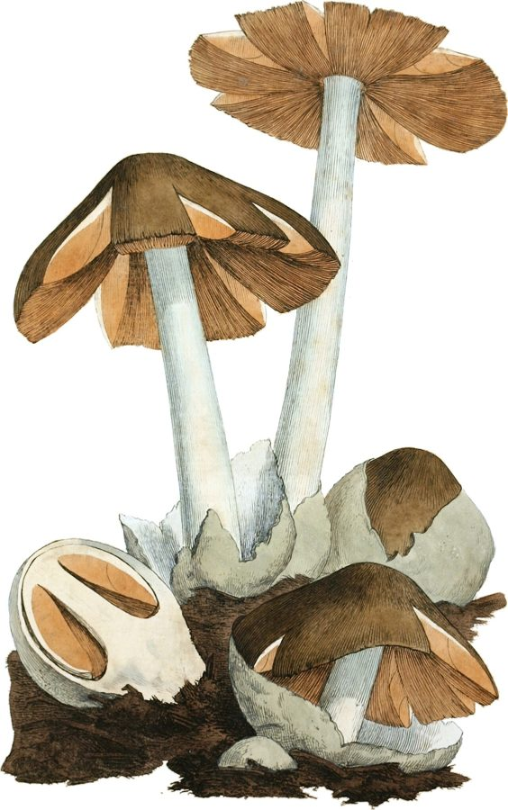

पुआल मशरूमPaddy Straw Mushroom
Volvariella volvacea · Pluteaceae · FNG-0003

- Scientific name
- Volvariella volvacea (Bull.) Singer
- Family
- Pluteaceae
- Hindi
- पुआल मशरूम / धान की खुम्बी / पराली मशरूम
- Status here
- native
- IUCN
- not evaluated
When to look कब देखें
Expected mainly in July, August, September, October.
पुआल मशरूम / Paddy Straw Mushroom
Volvariella volvacea (Bull.) Singer — Pluteaceae
पुआल मशरूम — पुआल मशरूम पूर्वी UP का सबसे स्थानीय मशरूम है — यह धान की पुआल (पराली) पर उगता है। किसान जानते हैं: धान के कटने के बाद खेत में पुआल ढेर पर या नमी में छोड़ी गई पराली पर मानसून में खुम्बी निकलती है। यह मशरूम एक ओर पराली को विघटित करता है (पराली जलाने की ज़रूरत कम करता है), दूसरी ओर खाद्य और पोषण का स्रोत है। इसकी खेती — "पुआल मशरूम उत्पादन" — पूर्वांचल के किसानों के लिए एक जीवनोपायी अवसर है।
Quick Identification शीघ्र पहचान
| Feature | Description |
|---|---|
| Cap Size & Shape | Cap 5–12 cm wide, egg-shaped when young, expanding to convex or flat with a slight hump |
| Colour | Cap grey-brown to dark grey with dark, silky radiating fibres |
| Volva | Large, white, cup-like sheath (universal veil remnants) enclosing the stem base |
| Gills | Free (unattached to the stem), crowded, turning salmon-pink at maturity |
| Stipe (Stem) | White, solid (5–8 cm long, 1–2 cm thick), completely lacking a stem ring |
| Substrate | Grows on decaying organic matter, especially piles of damp paddy/rice straw |
Field tip: Look for an "egg-stage" white sac or an expanded grey cap with pink gills on a pile of damp straw. The presence of a persistent white cup (volva) at the base of the stem and the absence of a stem ring are key features. Amanita species also have a cup at the base but grow from forest soils, have white gills, and can be deadly poisonous.
Morphology आकारिकी
| Feature | Measurement |
|---|---|
| Cap (pileus) diameter | 5–12 cm |
| Stipe height | 5–8 cm |
| Stipe diameter | 10–20 mm |
| Volva height / diameter | 3–5 cm |
| Spore dimensions | 7–9 × 5–6 µm |
Young stage ("egg"): The entire mushroom is enclosed within a white, membranous volva (universal veil) — it looks like a grey-white egg, 3–5 cm, lying on the substrate. This is the prime culinary stage.
Mature cap: As the mushroom expands, the volva splits at the top, revealing a dark grey-brown cap with silky, radially arranged fibres. Cap 5–12 cm at full expansion, convex to broadly umbonate.
Gills: Free (not attached to stem), crowded, initially white then turning salmon-pink as spores ripen. Spore print: pink.
Stipe: White, 5–8 cm × 1–2 cm, cylindrical, solid. No ring — the ring-like tissue belongs to the partial veil which does not leave a ring in this genus.
Volva: The persistent white cup at the base — key diagnostic feature. It remains even after the cap expands.
अंडे जैसा युवा मशरूम: जब खुम्बी जवान होती है, वह एक सफेद अंडे जैसी दिखती है — 3-5 से.मी. की गोलाकार थैली। यही सबसे स्वादिष्ट और पोषण से भरपूर अवस्था है। बड़े होने पर टोपी खुलती है।
Ecological Role पारिस्थितिक भूमिका
Lignocellulose decomposer: Volvariella volvacea is a thermophilic (heat-tolerant) saprotrophic fungus — it specialises in decomposing lignocellulose (cellulose + lignin) in paddy straw. It produces:
- Cellulases (break down cellulose)
- Ligninases (break down lignin — the tough woody compound)
- Amylases
This biochemical machinery converts the complex straw into simpler compounds available to soil organisms and plants.
Nutrient cycling: Paddy straw contains significant nitrogen, phosphorus, and potassium bound in organic form. As the mushroom mycelium colonises and fruits, it mineralises these nutrients, releasing them into the soil for the next crop.
Alternative to burning: Paddy straw burning ("पराली जलाना") releases smoke, carbon, and kills soil organisms. Cultivating paddy straw mushroom on the straw achieves the same decomposition — but produces food and preserves the nutrients in plant-available form. This is a genuine win-win for eastern UP farmers facing stubble-burning bans.
पराली जलाने का विकल्प: पराली पर मशरूम उगाओ, जलाओ मत। मशरूम उगाने से पराली सड़ती है, पोषक तत्व ज़मीन में जाते हैं, मशरूम खाने और बेचने को मिलता है — और धुआँ भी नहीं।
Life Cycle / Phenology जीवन चक्र
| Stage | Duration | Notes |
|---|---|---|
| Spore germination | 1–2 days | Spores germinate rapidly in warm, moist conditions |
| Mycelial colonisation | 5–7 days | White mycelium spreads through straw; substrate whitens |
| Primordia formation | Day 7–10 | Tiny pin-heads appear — first visible signs |
| Egg stage | Day 10–12 | White eggs (closed volva) — optimal harvest stage |
| Mature fruiting body | Day 12–15 | Cap opens; spores dispersed; past prime for eating |
| Substrate exhaustion | Day 20–30 | Mycelium exhausts straw; second flush may follow |
Temperature requirement: 30–38°C optimal for colonisation; 28–32°C for fruiting — explains why August–September is peak season in eastern UP (high temperature + post-monsoon humidity).
Second flush: After the first harvest, the mycelium may produce a second flush of smaller mushrooms if moisture is maintained. Total cultivation period: 4–6 weeks.
तापमान का महत्व: पुआल मशरूम को गर्मी चाहिए — 30-38°C सबसे अच्छा। इसीलिए मानसून के बाद (अगस्त-सितम्बर) खेत में पराली पर यह अपने आप उगता है। सर्दी में इसे उगाने के लिए पॉलीहाउस चाहिए।
Agricultural / Human Relevance कृषि एवं मानव उपयोग
Cultivation ("पुआल मशरूम उत्पादन"): Simple, low-cost cultivation:
- Paddy straw soaked in water for 12 hours
- Pasteurised (dipped in 70°C water for 1 hour) to kill competing organisms
- Spread in 10–15 cm layers; inoculate with spawn (15–20% by weight)
- Maintain 30°C, 80% humidity, indirect light
- Harvest eggs on Days 10–12; collect 3–4 flushes
Yield: 800–1200 g mushroom per kg dry straw. Market price: ₹80–150/kg fresh.
Government promotion: Uttar Pradesh Agriculture Department and National Horticulture Mission promote paddy straw mushroom cultivation as livelihood for SC/ST/marginal farmers — particularly in post-kharif (October-November) period after paddy harvest.
Nutrition: High protein content (2.7% fresh weight, 24% dry weight) — higher than most vegetables. Rich in B vitamins, potassium, iron. Low fat. Important food security supplement.
Market: Fresh mushrooms have 2–3 day shelf life; dried mushrooms keep for months. Urban UP demand for mushrooms growing rapidly. Basti and Gorakhpur districts have active mushroom producer groups.
खेती का तरीका: 1 किलो पुआल में से 800-1200 ग्राम मशरूम निकलता है। किसान 10-15 दिन में पहली तुड़ाई कर सकते हैं। बाज़ार में ताज़ी कीमत ₹80-150 प्रति किलो। पराली जलाने की जगह पराली से पैसे कमाओ।
Expected Locally स्थानीय रूप से अपेक्षित
Not a field record. Written from published accounts for eastern Uttar Pradesh. No confirmed local sighting yet — if you have seen it, that is what the atlas needs.
अभी तक स्थानीय पुष्टि नहीं। यह विवरण प्रकाशित स्रोतों से है, किसी अवलोकन से नहीं।
- Naturally found on paddy straw heaps in Basti and Gorakhpur districts after August rains — farmers call it "अपने आप की खुम्बी" (self-growing mushroom)
- UP Agriculture Department runs mushroom cultivation training programmes at Krishi Vigyan Kendras in Basti district
- Some women's self-help groups (SHGs) in Basti district already cultivating paddy straw mushroom as supplementary income
- Dried paddy straw mushroom sold in some UP markets — Lucknow Aminabad market has vendors with this product
- Confusion with toxic mushrooms occasionally reported — training on identification essential
स्वयंसहायता समूह: बस्ती जिले में कई महिला स्वयंसहायता समूह पुआल मशरूम उगा रही हैं। यह जमीनी स्तर पर पर्यावरण और आजीविका का एक साथ समाधान है।
Distribution वितरण
Global range: Pantropical and subtropical; widely distributed across South and East Asia, Africa, and parts of Europe and the Americas.
In India: Found throughout the plains, especially in major rice-growing states of West Bengal, Odisha, Bihar, Uttar Pradesh, and Tamil Nadu.
In Uttar Pradesh: Common in central and eastern districts, particularly in the post-harvest fields and straw storage heaps of the Gangetic plain.
In Basti district / eastern UP: Ubiquitous in agricultural villages, growing naturally on old paddy straw piles and stubble margins during the hot, humid monsoon months.
Range notes: No significant range changes documented; its range remains tied to rice cultivation belts.
Research Questions शोध प्रश्न
- What is the natural spore bank of Volvariella volvacea in paddy straw fields of eastern UP — does spontaneous fruiting occur without inoculation?
- Does paddy straw mushroom cultivation (vs. burning) measurably improve next-season soil nitrogen and organic matter in Basti district test plots?
- Can the spent mushroom substrate (after harvest) be used directly as organic fertiliser — and what is the nutrient profile compared to raw compost?
- Are any competing or toxic mushrooms growing alongside Volvariella on paddy straw in eastern UP — and has any poisoning been recorded?
- What is the economic break-even for paddy straw mushroom cultivation at the household scale in Basti district?
Similar Species मिलती-जुलती प्रजातियाँ
| Species | How to tell apart |
|---|---|
| Amanita spp. (Death Caps) | Also have volva at base; white Amanita species DANGEROUS; grow from soil in forest, not on straw — but critical to distinguish |
| Coprinus (Ink Caps) | Grow on straw/dung but no volva; caps liquify (autodigest) when mature |
| Pleurotus ostreatus (Oyster Mushroom) | Grey oyster-shaped caps; grows on wood, not straw; no volva |
WARNING: Never confuse with Amanita species — both have a cup/volva at base, but Amanita grows from soil and has white gills that stay white. Volvariella has pink gills at maturity. Eating Amanita phalloides can be fatal.
Taxonomy & Classification वर्गीकरण
Original description. Volvariella volvacea was described by Jean Baptiste François Pierre Bulliard in 1786 as Agaricus volvaceus in Herbier de la France t. 262. It was transferred to the genus Volvariella by Rolf Singer in 1951 in Lilloa 22: 401. Type locality: France. The genus name Volvariella is a diminutive of Volvaria, referring to the volva at the base of the stem, and the species epithet volvacea refers to this prominent cup.
Subspecies. Monotypic — no subspecies are currently recognised.
Family and order placement. Belongs to the order Agaricales, family Pluteaceae. Pluteaceae is a family of agarics characterized by free gills and pink spore prints, containing about 10 genera.
Phylogenetic notes. The genus Volvariella has historically been distinguished by its pink spore print and prominent volva. Molecular phylogenetic analyses show that Volvariella is polyphyletic, and Volvariella volvacea is the type species of the genus, closely related to the genus Pluteus.
IUCN status rationale. This species has not been formally assessed by the IUCN Red List. As a widely cultivated and naturally occurring mushroom in warm agricultural zones, its population remains stable, supported by extensive rice cultivation and stubble substrates.
Photo Gallery फ़ोटो गैलरी
Atlas Connections संबंधित प्रजातियाँ
- Paddy — primary substrate for mushroom growth (paddy straw) (FLR-0014)
- Mound-building Termite — competes for straw decomposition; termite mound and mushroom are both decomposers (SFL-0001)
- Indian Common Earthworm — spent mushroom substrate (post-harvest compost) enriches earthworm habitat (SFL-0002)
- Termite Mushroom — comparison: both Basidiomycota but very different ecology (FNG-0001)
References सन्दर्भ
- Bulliard, J.B.F. (1786). Herbier de la France, t. 262. Paris.
- Singer, R. (1951). The Agaricales in modern taxonomy. Lilloa, 22: 1–832.
- Chang, S.T. & Miles, P.G. (2004). Mushrooms: Cultivation, Nutritional Value, Medicinal Effect and Environmental Impact. 2nd ed. CRC Press, Boca Raton.
- ICAR-Directorate of Mushroom Research (2021). Cultivation of Paddy Straw Mushroom. DMR, Solan.
- Uttar Pradesh Horticulture Department (2020). Mushroom Cultivation Training Manual. UPH, Lucknow.
- Bhuvaneswari, N. (2010). Nutritional quality of Volvariella volvacea. Mushroom Research, 19(2): 85–88.
- GBIF Occurrence Data — Volvariella volvacea, India (2026).
Source file: species/fungi/mushrooms/paddy_straw_mushroom.md